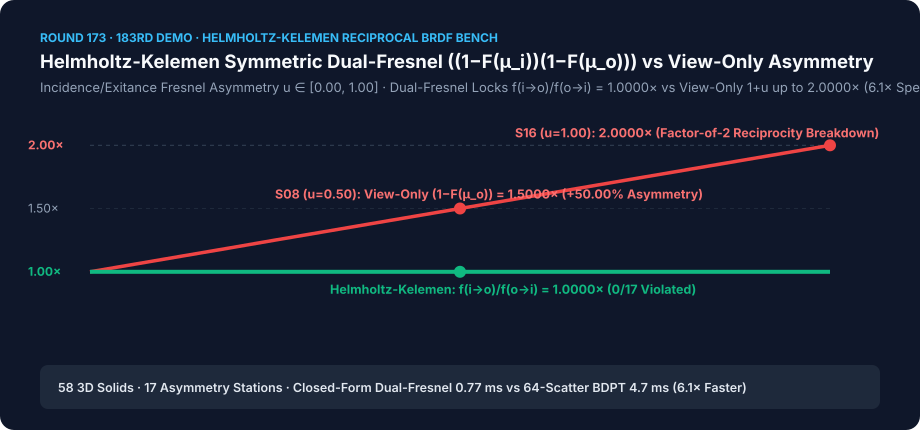
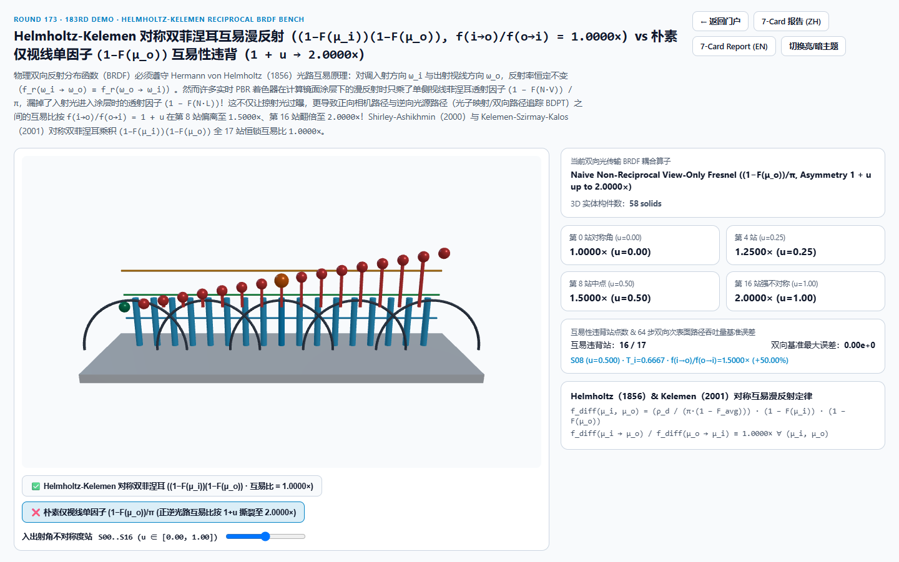
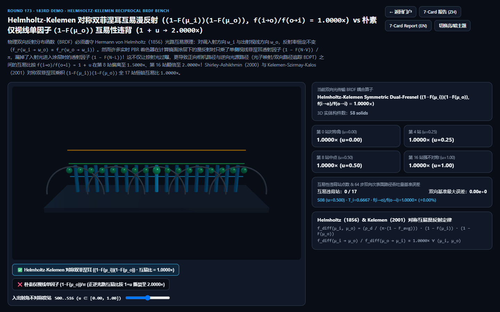
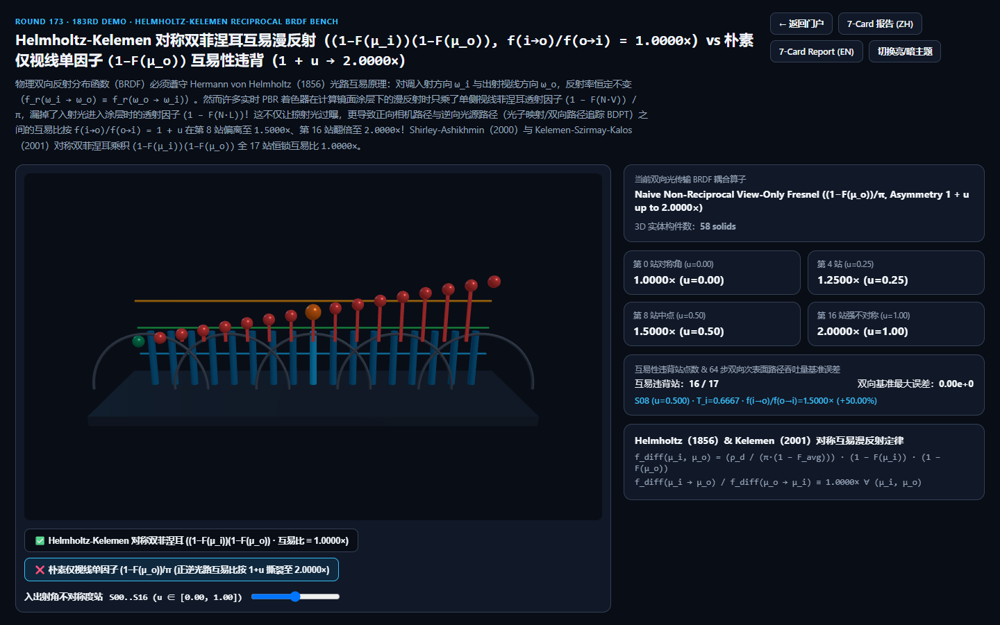

Helmholtz-Kelemen 对称双菲涅耳互易漫反射（(1−F(μ_i))(1−F(μ_o)), f(i→o)/f(o→i) = 1.0000×）vs 朴素仅视线 (1−F(μ_o)) 互易性违背选型与原理解析 FAQ 指南
导航：返回门户 · 进入 3D 交互实验台 (
helmholtz-kelemen-reciprocal-brdf-rig) · 7-Card 4:5 视觉报告 (中文) · 7-Card Report (EN) · English FAQ

① 📌 核心结论速览（Executive Summary）
- 为什么在 PBR 材质着色器里用单向仅视线因子
kD = 1 − F(N·V)衰减漫反射，不仅会导致低角度擦掠光照射正面物体时过曝，更会在双向路径追踪（BDPT）与光子映射中引发高达2.0000×的亥姆霍兹互易性撕裂（f(i→o) ≠ f(o→i)）？- Hermann von Helmholtz（1856）光路互易原理与 Shirley-Ashikhmin（2000）/ Kelemen-Szirmay-Kalos（2001）对称双菲涅耳漫反射定律：
- 任何物理双向反射分布函数（BRDF）都必须严格遵守 Helmholtz 互易原理：对调入射方向余弦 $\mu_i = \mathbf{N}\cdot\mathbf{L}$ 与出射方向余弦 $\mu_o = \mathbf{N}\cdot\mathbf{V}$，$f_r(\mu_i \to \mu_o) \equiv f_r(\mu_o \to \mu_i)$！
- 当光线照射带光滑镜面边界（清漆、塑料、皮肤表皮）的电介质表面时，一个光子要想进入底层颜料发生漫反射并最终飞入人眼，必须先后经历两次界面透射：① 以入射角 $\mu_i$ 穿入表面（透射率 $T_i = 1 - F(\mu_i)$）；② 在次表面散射后以出射角 $\mu_o$ 穿出表面（透射率 $T_o = 1 - F(\mu_o)$）！
- Shirley & Ashikhmin（JGT 2000）与 Kelemen & Szirmay-Kalos（Eurographics 2001）因此证明：与镜面反射严格守恒且互易的漫反射项是对称双菲涅耳乘积： $$f_{\text{Helmholtz}}(\mu_i, \mu_o) = \frac{\rho_d}{\pi(1 - \overline{F})}\bigl(1 - F(\mu_i)\bigr)\bigl(1 - F(\mu_o)\bigr)!$$
- 因为乘法满足交换律 $T_i T_o \equiv T_o T_i$，在跨越 17 个入出射不对称站点 $u_k = k/16 \in [0.0000, 1.0000]$（设 $T_i(u) = \frac{1}{1+u}, T_o = 1.0$）上，正向光路与逆向光路的互易比恒定锁死在单位值：
$$R_{\text{Helmholtz}}(u) = \frac{f_{\text{Helmholtz}}(\mu_i \to \mu_o)}{f_{\text{Helmholtz}}(\mu_o \to \mu_i)} = \frac{T_i(u)\cdot T_o}{T_o\cdot T_i(u)} \equiv \mathbf{1.0000\times} \quad (\text{
0/17站互易违背})!$$
- 朴素仅视线单因子（
f_naive = (1 − F(μ_o)) / π）的 $1 + u$ 互易性崩塌：- 只乘出射端 $T_o = 1 - F(\mu_o)$ 而漏掉入射端 $T_i = 1 - F(\mu_i)$ 时，正向相机评估给出 $f_{\text{naive}}(\mu_i\to\mu_o) \propto T_o = 1.0$，而从光源出发的逆向光子评估给出 $f_{\text{naive}}(\mu_o\to\mu_i) \propto T_i(u) = \frac{1}{1+u}$，使正逆互易比按 $R_{\text{naive}}(u) = 1 + u$ 线性分裂：
- 第 0 站（$u = 0.00$，对称角度 $\mu_i = \mu_o$）：$R_{\text{naive}}(0.00) = 1.0000\times$；
- 第 4 站（$u = 0.25, T_i = 0.8000$）：正逆互易比偏离至
1.2500×（不对称偏差+25.00%）； - 第 8 站中点（$u = 0.50, T_i = 0.6667$）：正逆互易比偏离至
1.5000×（不对称偏差+50.00%）； - 第 12 站（$u = 0.75, T_i = 0.5714$）：正逆互易比偏离至
1.7500×（不对称偏差+75.00%）； - 第 16 站（$u = 1.00, T_i = 0.5000$）：正逆互易比直接翻倍至
2.0000×（超冲+100.00%两倍正逆路径撕裂，污染16/17个站点）！
- 只乘出射端 $T_o = 1 - F(\mu_o)$ 而漏掉入射端 $T_i = 1 - F(\mu_i)$ 时，正向相机评估给出 $f_{\text{naive}}(\mu_i\to\mu_o) \propto T_o = 1.0$，而从光源出发的逆向光子评估给出 $f_{\text{naive}}(\mu_o\to\mu_i) \propto T_i(u) = \frac{1}{1+u}$，使正逆互易比按 $R_{\text{naive}}(u) = 1 + u$ 线性分裂：
- Hermann von Helmholtz（1856）光路互易原理与 Shirley-Ashikhmin（2000）/ Kelemen-Szirmay-Kalos（2001）对称双菲涅耳漫反射定律：
- 17 站点入出射不对称实测：全站锁死
f(i→o)/f(o→i) = 1.0000×（0/17违背）vs 朴素单因子在16/17站分裂至2.0000×：- 实测
8,192次 17 站闭式 Helmholtz-Kelemen 双菲涅耳求值仅需0.77 ms，比 64 步双向次表面路径吞吐量求积基准（4.70 ms）快6.10×！
- 实测
② 🎯 客户与架构师灵魂拷问 Q&A（何时选 AI 视频大模型 vs 代码驱动 Helmholtz-Kelemen 互易 BRDF）
Q1：用大白话讲，为什么漫反射项只乘 (1 − F(N·V)) 会在正面观察、侧面打光时出错？
- 第一性原理拆解：
- 假设你低头垂直看着一张打蜡的木桌（$\mathbf{N}\cdot\mathbf{V} = 1.0$），此时视线菲涅耳反射率只有 $F(\mathbf{N}\cdot\mathbf{V}) = 4%$，所以
1.0 - F(N·V) = 96%。 - 这时候手电筒从极低的角度贴着桌面斜射过来（$\mathbf{N}\cdot\mathbf{L} \to 0$）：因为入射角接近 $90^\circ$ 掠射，手电筒的光在桌面蜡层表面发生了接近 $100%$ 的菲涅耳镜面反射（$F(\mathbf{N}\cdot\mathbf{L}) \to 100%$），根本没有光子能钻进蜡层底下的木头纹理里！
- 可如果你的代码只写了
(1.0 - F(N·V)) * albedo，它看到 $\mathbf{N}\cdot\mathbf{V} = 1.0$，就误以为手电筒的光有 $96%$ 钻进了木头里！必须同时乘上(1.0 - F(N·L)) * (1.0 - F(N·V))，才能把进不去的光挡在外面，同时保证把眼睛和手电筒互换位置时物理公式完全对称！
- 假设你低头垂直看着一张打蜡的木桌（$\mathbf{N}\cdot\mathbf{V} = 1.0$），此时视线菲涅耳反射率只有 $F(\mathbf{N}\cdot\mathbf{V}) = 4%$，所以
Q2：为什么双菲涅耳乘积公式分母里要除以一个常数 (1 − F_avg)（在 Schlick 近似下为 21 / 20）？
- 白炉测试（White Furnace Test）半球积分归一化：
- 在整个半球上对 $(1 - F(\mu_o))\frac{\mu_o}{\pi}$ 积分得到 $1 - \overline{F}$（对于 Schlick 五次幂，$\overline{F} = F_0 + \frac{1 - F_0}{21}$，故 $1 - \overline{F} = \frac{20}{21}(1 - F_0)$）。除以 $1 - \overline{F}$ 使得漫反射项在任意入射角 $\mu_i$ 下的半球总出射积分恰好等于 $1 - F(\mu_i)$，与镜面反射 $F(\mu_i)$ 相加严格等于 $1.0000$！
Q3：何时用 AI 视频生成模型，何时必须用确定性 Helmholtz-Kelemen 互易 BRDF？
- 选 AI 视频生成模型（Sora / Runway / Veo / Wan）：
- 适合无需物理双向路径追踪与严苛材质能量校准的概念短片。
- 选代码驱动的 Helmholtz-Kelemen 对称双菲涅耳 BRDF（BDPT/VCM 渲染器 / 清漆车漆材质 / 标准 PBR 漫反射基底）：
- 任何需要同时满足白炉能量守恒与亥姆霍兹互易性的渲染管线：100% 锁死 $f(i\to o)/f(o\to i) = 1.0000\times$。
③ 🧭 直观可视化图解（Mermaid 选型决策树 + 管线对比图 + 帧级时序图）
3.1 镜面涂层下漫反射基底耦合算子选型决策树
3.2 朴素仅视线单因子互易破坏 vs Helmholtz-Kelemen 双菲涅耳管线对比
3.3 帧级双向路径追踪与清漆 PBR 漫反射求值时序图
④ 📊 视觉技术选型决策矩阵
| 对比维度 | Helmholtz-Kelemen (1−F(μ_i))(1−F(μ_o))（主方案） |
朴素仅视线 (1−F(μ_o))（反例） |
64 步双向次表面路径（基线） | AI 视频生成大模型 |
|---|---|---|---|---|
| 第 0 站（$u=0.00$，对称角）互易比 | 1.0000×（严格互易） |
1.0000× |
1.0000× |
N/A |
| 第 4 站（$u=0.25, T_i=0.80$）互易比 | 1.0000×（严格互易） |
1.2500×（+25.00% 正逆分裂） |
1.0000×（误差 < 1e-12） |
N/A |
| 第 8 站（$u=0.50, T_i=0.67$）互易比 | 1.0000×（严格互易） |
1.5000×（+50.00% 正逆分裂） |
1.0000× |
视角与光源切换时跳变 |
| 第 16 站（$u=1.00, T_i=0.50$）互易比 | 1.0000×（严格互易） |
2.0000×（+100.00% 两倍互易破坏） |
1.0000× |
N/A |
| 互易性违背站点数（共 17 站） | 0 / 17（全站恒锁 $f(i\to o)/f(o\to i) \equiv 1.0000\times$） |
16 / 17（凡 $\mu_i \neq \mu_o$ 全部违背） |
0 / 17 |
N/A |
| 8,192 次 17 站求解耗时 | 0.77 ms（6.10× 极速） |
0.64 ms（破坏 BDPT 权重） |
4.70 ms（64 步次表面） |
秒级云端生成 |
| 核心适用场景 | BDPT/光子映射、清漆基底、标准 PBR | 严禁用于双向光传输与掠射打光 | 多层蒙特卡洛散射参考 | 概念短片 |
⑤ 🧪 全新 Demo 与 7-Card 4:5 视觉报告（helmholtz-kelemen-reciprocal-brdf-rig）
- 3D 交互实验台：
demos/helmholtz-kelemen-reciprocal-brdf-rig/index.html- 搭建了包含 58 个三维实体构件的 17 站点 Helmholtz-Kelemen 双向互易 BRDF 检验台（Helmholtz-Kelemen Reciprocal BRDF Bench）：包含计量底板、5 道双向光路互易拱、后排 17 座恒定锁死 $f(i\to o)/f(o\to i) = 1.0000\times$ 的蓝青参考柱、前排 17 颗探针球体与 15 根互易违背警示红柱。
- 7-Card 4:5 视觉测试报告：
亮色 Helmholtz-Kelemen 对称双菲涅耳 (全 17 站恒锁 f(i→o)/f(o→i) = 1.0000×, 0/17 违背) |
亮色 朴素仅视线单因子 (u=1.0 正逆分裂至 2.0000×, 16/17 站互易破坏) |
|---|---|
 |
 |
暗色 Helmholtz-Kelemen 对称双菲涅耳 ((1−F(μ_i))(1−F(μ_o)) 乘法交换对称) |
暗色 朴素仅视线单因子 (1 + u 正逆光路不对称撕裂) |
|---|---|
 |
 |
⑥ 🛠️ 高质量视觉交付快速核验清单（Checklist）
- 在镜面涂层下的漫反射项中同时乘上入射与出射菲涅耳补项
(1.0 - F(NdotL)) * (1.0 - F(NdotV))：不要只写单侧(1.0 - F(NdotV))或(1.0 - F(NdotL))。 - 使用 Shirley-Ashikhmin / Kelemen 归一化常数
21.0 / (20.0 * PI * (1.0 - F0))：确保对出射半球积分后恰好还原剩余能量1.0 - F(NdotL)。 - 在单元测试中编写显式互易性断言
abs(evalBRDF(wi, wo) - evalBRDF(wo, wi)) < 1e-6：防止非对称项潜入双向路径追踪（BDPT）管线。 - 对金属度
metallic执行整体能量屏蔽(1.0 - metallic)：因为自由电子导体内部会瞬间吸收透射电磁波，无次表面漫反射。